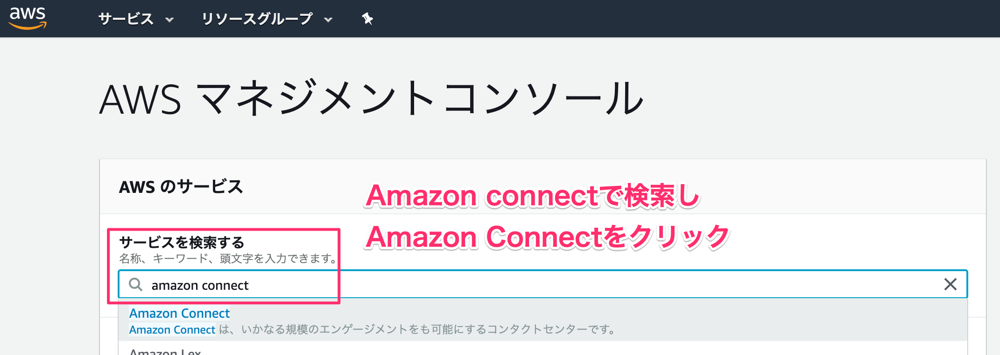
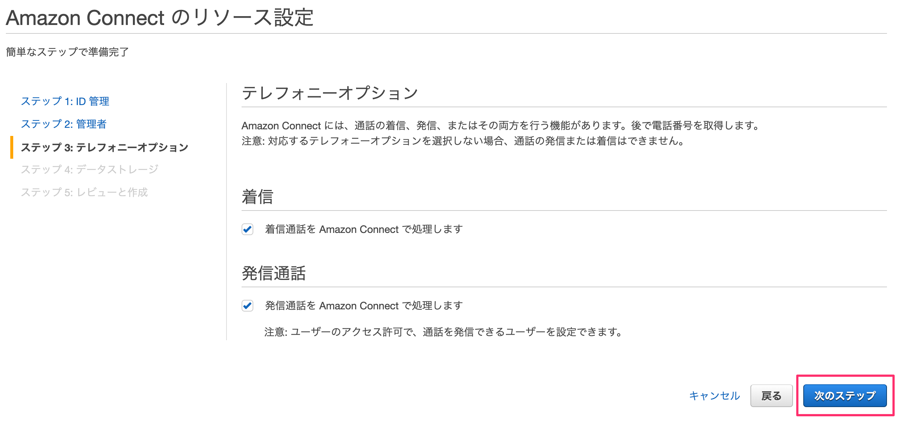
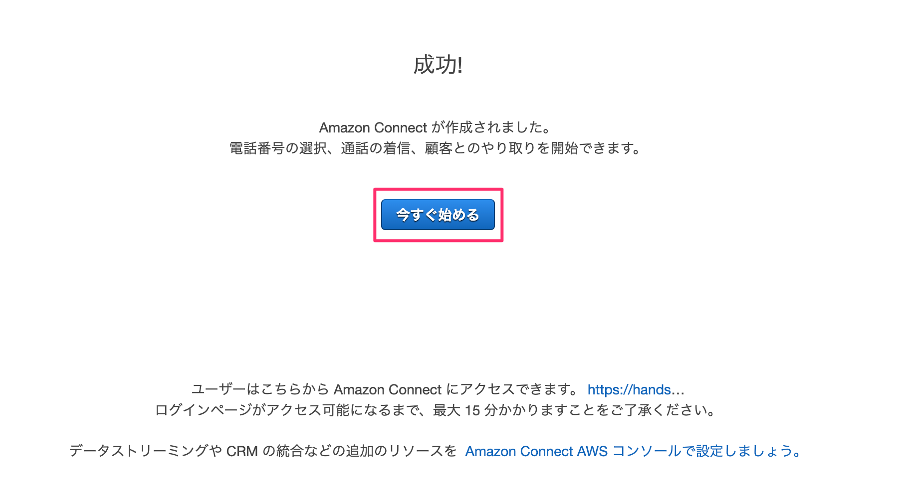
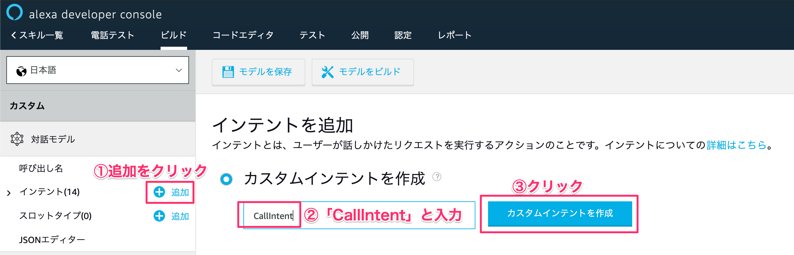
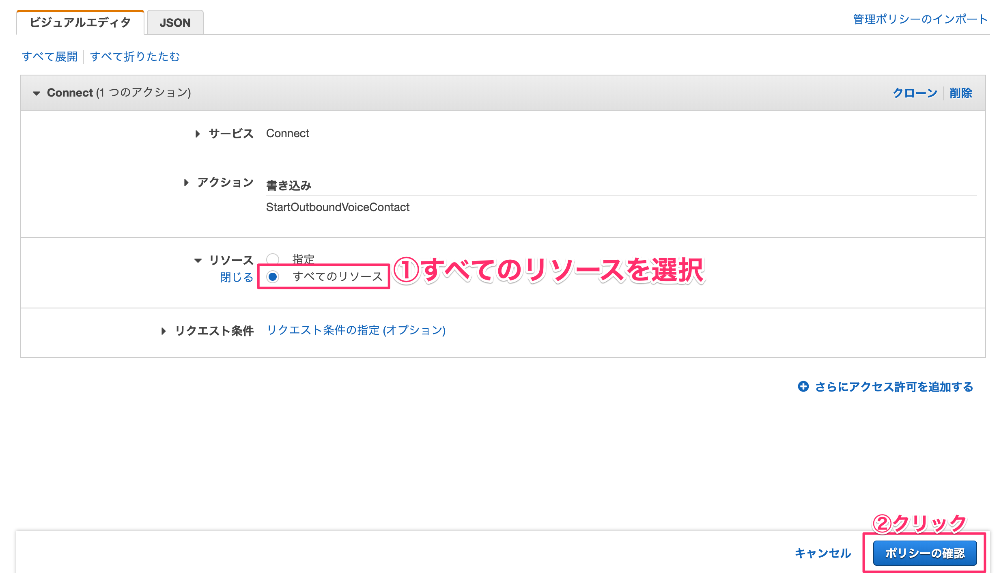

1-1. リソースを作成する
AWSにアクセスし、お持ちのAWSアカウントでログインします。
https://aws.amazon.com/jp/
コンソール画面が開いたら、サービス検索から【Amazon Connect】と入力して検索します。
出てきた［Amazon Connect］をクリックします。

［今すぐ始める］ボタンをクリックします。

東京リージョンになっているか確認してください。
なっていない方は右上から「アジアパシフィック（東京）」を選択します。

アクセスURLに今回使用するための名前を決めます。
［tokyo-gaomar-{今日の日付}-{連番}］という感じで他の人と被らないような名前にします。

ステップ２の管理者の作成は後でできるので、「これをスキップ」を選択してから、［次のステップ］ボタンをクリックします。

ステップ３のテレフォニーオプションもそのまま何もせず［次のステップ］ボタンをクリックします。

ステップ４のデータストレージもそのまま［次のステップ］ボタンをクリックします。

ステップ５で最終確認をして問題なければ［インスタンスの作成］ボタンをクリックします。
1〜2分ほど作成に時間がかかります。
成功すれば、［今すぐ始める］ボタンをクリックします。

2-1.電話番号を取得する
Amazon Connect専用の電話番号を手に入れます。
別のタブでAmazon Connect用の画面が表示されるので、そこに表示されている［今すぐ始める］ボタンをクリックします。

電話番号の取得で、国はJapan +81を選択します。

次のタイプは2種類あります。お好きな方を選んでください。
Direct Dial | 050番号が取得できる。発信者が通話料負担する。 |
Toll Free | 0800番号が取得できる。発信者の通話料無料（フリーダイヤル）開発者が負担する。 |

最後にお好きな番号を選択して、［次へ］ボタンをクリックします。
※ 取得した番号はメモしておきましょう

［Continue］ボタンをクリックします。

3-1.問い合わせフローを作成する
左メニューのルーティングから問い合わせフローをクリックします。

［問い合わせフローの作成］ボタンをクリックします。

問い合わせフローの名前を最初に設定しておきます。今回は APLフロー としました。

3-2.フローエディタに触れる
フローエディタを触っていきます。
左メニューの設定カテゴリを展開して、その中にある「音声の設定」をフローエディタにドラッグアンドドロップします。ドロップしたメニューをクリックします。
音声の設定で、言語は日本語を選択します。

音声は男性の声ならTakumiで女性の声ならMizukiを選択します。お好きな方を選択してください。右下の［Save］ボタンをクリックします。

ブロックを繋いでいきます。エントリポイントの右にある○をクリックして引っ張ります。
そのまま出っ張っている部分に繋ぎます。
直感的に繋いていけるので初心者でも簡単に作ることができます。

操作カテゴリにあるプロンプトの再生ブロックをフローエディタにドラッグアンドドロップします。ドロップしたら、そのブロックをクリックします。

テキスト読み上げ機能（アドホック）を選択し、テキストを入力します。
<speak>
<break time='2s' />
アレクサから呼び出されたよ。APLは楽しいね！では、さようなら
</speak>
解釈する部分はプルダウンメニューからSSMLを選択します。最後に［Save］ボタンをクリックします。
ブロックを繋いでいきます。

終了/転送カテゴリにある、切断/ハングアップのブロックをドラッグアンドドロップします。

線で結んでから、右上の下向き▼をクリックして、［保存して発行］をクリックします。

追加のフロー情報の表示部分を展開して、下線部の赤い部分のインスタンスIDと下線部の青い部分のコンタクトフローIDをそれぞれメモしておきます。

4-1. Alexaスキルを新規作成する
こちらからログインしてください。ログインしたら、［スキルの作成］ボタンをクリックします。
スキル名はお好きな名前を設定します。モデルは「カスタム」で、「独自のプロビジョニング」を選択します。右上の［スキルを作成］ボタンをクリックします。

呼び出し名の部分をクリックします。呼び出し名はお好きな名前を入力してください。呼び出し名が設定できたら、［モデルを保存］ボタンをクリックします。

インターフェースをクリックします。その中にある「Displayインターフェース」と「Alexa Presentation Language」を有効にします。設定できたら［インターフェースを保存］ボタンをクリックします。
4-2. インテントを作成する
左側メニューのインテントにある［＋追加］をクリックします。インテント名をCallIntentと入力し、［カスタムインテントを作成］ボタンをクリックします。

サンプル発話に「電話をかけて」と入力して、［モデルを保存］と［モデルをビルド］ボタンをクリックします。

5-1. Lambdaレイヤーを作成する
AWSにログインして、サービスからLambdaを検索して［Lambda］をクリックします。

Lambdaレイヤーと呼ばれる機能があります。予め使用するライブラリ群をアップロードしておいて、必要なライブラリをレイヤー単位でLambda関数に適用することができます。
左側メニューのLayersから［レイヤーの作成］ボタンをクリックします。

各項目を埋めていきます。linebot.zipは下記からダウンロードしてください。
https://github.com/gaomar/tokyo-gaomar-01/raw/master/files/ask-sdk.zip
［作成］ボタンをクリックします。
名前 | ASK-SDK |
説明 | ASK-SDK |
アップロード | ask-sdk.zip |
ランタイム | Node.js 8.10 |

5-2. Lambda関数を作成する
Lambda関数を作成します。［関数の作成］ボタンをクリックします。

各項目を埋めていきます
①関数名 | AmazonConnect-Alexa |
②ランタイム | Node.js 8.10 |
③実行ロール | AWSポリシーテンプレートから新しいロールを作成 |
④ロール名 | AmazonConnect-Alexa-Role |
⑤ポリシーテンプレート | 基本的なLambda@Edgeのアクセス権限 |

5-3. ポリシーの権限追加
関数が作成できたら、下にスクロールして、実行ロールという部分を探してください。
そこにあるAmazonConnect-Alexa-Roleロールを表示という部分をクリックします。

［インラインポリシーの追加］をクリックします。
サービスを展開して、検索窓に「Connect」と入れて検索します。出てきた［Connect］をクリックします。

アクションのアクセスレベルにある「書き込み」部分を展開して、その中にあるStartOutboundVoiceContactのチェックを入れます。

すべてのリソースを選択して、右下の［ポリシーの確認］ボタンをクリックします。

ポリシー名を入力します。AmazonConnect-Alexa-Policyとしました。右下の［ポリシーの作成］ボタンをクリックします。

Lambda画面に戻り、画面更新するとAmazon Connectの権限が追加されます。
5-4. AlexaとLambdaと紐付ける
Lambda実行するためのトリガーとしてAlexa Skills Kitを紐付けます。
左側メニューにAlexa Skills Kitという部分があるので、クリックして追加します。
alexa developer consoleのエンドポイントをクリックします。AWS LambdaのARNを選択して、スキルIDをコピーします。
Lambda側にあるスキルIDに貼り付けます。貼り付けたら、［追加］ボタンをクリックします。

右上の［保存］ボタンをクリックします。Lambda側のARNの値をコピーして、alexa developer consoleのデフォルトの地域LambdaのARNの値を貼り付けます。
貼り付けたら、［エンドポイントを保存］をクリックします。
5-5. Lambdaレイヤーを適用する
5-1で作成したLambdaレイヤーを関数に適用します。
Layers部分をクリックして、［レイヤーの追加］をクリックします。

レイヤーの名前とバージョンを指定して、［追加］ボタンをクリックします。
名前 | ASK-SDK |
バージョン | 1 |
5-6. index.jsを編集する
AmazonConnect-Alexa部分をクリックして、下にあるindex.jsのファイルを編集します。
index.jsの内容は下記からコピーしてください。
https://raw.githubusercontent.com/gaomar/tokyo-gaomar-01/master/files/index.js

const Alexa = require('ask-sdk-core');
const AWS = require('aws-sdk');
var connect = new AWS.Connect();
// スキル起動時
const LaunchRequestHandler = {
canHandle(handlerInput) {
return Alexa.getRequestType(handlerInput.requestEnvelope) === 'LaunchRequest';
},
handle(handlerInput) {
const speechText = 'メニューをタップしてください。';
return handlerInput.responseBuilder
.speak(speechText)
.addDirective({
type : 'Alexa.Presentation.APL.RenderDocument',
version: '1.0',
token: "token",
document: require('./apl_top.json')
})
.getResponse();
}
};
// 画面タッチ処理
// シミュレーターではonPressが反応し、実機ではPressが反応するため2つ書いておく
const TouchEventHandler = {
canHandle(handlerInput) {
return ((Alexa.getRequestType(handlerInput.requestEnvelope) === 'Alexa.Presentation.APL.UserEvent' &&
(handlerInput.requestEnvelope.request.source.handler === 'Press' ||
handlerInput.requestEnvelope.request.source.handler === 'onPress')));
},
async handle(handlerInput) {
// 電話をかける
CallAction();
const speechText = '電話をかけます。'
return handlerInput.responseBuilder
.speak(speechText)
.getResponse();
}
};
// 電話をかける処理
function CallAction() {
var params = {
InstanceId: process.env.INSTANCEID,
ContactFlowId: process.env.CONTACTFLOWID,
DestinationPhoneNumber: process.env.PHONENUMBER,
SourcePhoneNumber: process.env.SOURCEPHONENUMBER
};
var calling =connect.startOutboundVoiceContact(params, function(err, data) {
if (err) {
console.log(err);
}
});
}
// ヘルプ
const CallIntentHandler = {
canHandle(handlerInput) {
return Alexa.getRequestType(handlerInput.requestEnvelope) === 'IntentRequest'
&& Alexa.getIntentName(handlerInput.requestEnvelope) === 'CallIntent';
},
handle(handlerInput) {
// 電話をかける
CallAction();
const speechText = '電話をかけます。';
return handlerInput.responseBuilder
.speak(speechText)
.getResponse();
}
};
// ヘルプ
const HelpIntentHandler = {
canHandle(handlerInput) {
return Alexa.getRequestType(handlerInput.requestEnvelope) === 'IntentRequest'
&& Alexa.getIntentName(handlerInput.requestEnvelope) === 'AMAZON.HelpIntent';
},
handle(handlerInput) {
const speechText = 'メモを保存する場合は「メモをセーブ」。メモを聞く場合は「メモをロード」と言ってください。それではどうぞ！';
return handlerInput.responseBuilder
.speak(speechText)
.reprompt(speechText)
.getResponse();
}
};
// キャンセルor終了と発話された
const CancelAndStopIntentHandler = {
canHandle(handlerInput) {
return Alexa.getRequestType(handlerInput.requestEnvelope) === 'IntentRequest'
&& (Alexa.getIntentName(handlerInput.requestEnvelope) === 'AMAZON.CancelIntent'
|| Alexa.getIntentName(handlerInput.requestEnvelope) === 'AMAZON.StopIntent');
},
handle(handlerInput) {
const speechText = 'バイバイ！またね！';
return handlerInput.responseBuilder
.speak(speechText)
.getResponse();
}
};
// セッション切れ
const SessionEndedRequestHandler = {
canHandle(handlerInput) {
return Alexa.getRequestType(handlerInput.requestEnvelope) === 'SessionEndedRequest';
},
handle(handlerInput) {
// Any cleanup logic goes here.
return handlerInput.responseBuilder.getResponse();
}
};
// エラー時
const ErrorHandler = {
canHandle() {
return true;
},
handle(handlerInput, error) {
console.log(`~~~~ Error handled: ${error.message}`);
const speechText = `不明なエラーが出ました`;
return handlerInput.responseBuilder
.speak(speechText)
.reprompt(speechText)
.getResponse();
}
};
// 各種Handlerを登録する
exports.handler = Alexa.SkillBuilders.custom()
.addRequestHandlers(
LaunchRequestHandler,
HelpIntentHandler,
CallIntentHandler,
TouchEventHandler,
CancelAndStopIntentHandler,
SessionEndedRequestHandler)
.addErrorHandlers(
ErrorHandler)
.lambda();
5-7. APLファイルを新規作成する
index.jsで指定しているapl_top.jsonファイルを新規作成します。
＋マークをクリックして、ファイルを追加します。

下記ファイルをコピペしてください。
https://raw.githubusercontent.com/gaomar/tokyo-gaomar-01/master/files/apl_top.json
{
"type": "APL",
"version": "1.0",
"theme": "dark",
"import": [],
"resources": [],
"styles": {},
"layouts": {},
"mainTemplate": {
"parameters": [
"payload"
],
"items": [
{
"type": "Container",
"direction": "column",
"item": [
{
"type": "Text",
"textAlign": "center",
"paddingTop": "15vh",
"text": "メニュー選択"
},
{
"type": "Container",
"direction": "row",
"alignItems": "center",
"justifyContent": "center",
"width": "100vw",
"height": "50vh",
"paddingTop": "10vh",
"items": [
{
"type": "Container",
"item": [
{
"type": "TouchWrapper",
"onPress": {
"type": "SendEvent",
"arguments": [
"save"
]
},
"item": [
{
"type": "Frame",
"borderRadius": 10,
"backgroundColor": "green",
"item": [
{
"type": "Text",
"width": "60vw",
"height": "20vh",
"textAlign": "center",
"textAlignVertical": "center",
"fontSize": "7vw",
"text": "電話をかける"
}
]
}
]
}
]
}
]
}
]
}
]
}
}
コードをコピペできたら、ファイルを保存します。ファイル名は「apl_top.json」としてください。［Save］ボタンをクリックします。
※ファイル名はスペルミスしないように気をつけてください

5-8. LambdaからAmazon Connectの環境を設定する
index.jsに環境変数として設定している項目を埋めていきます。
※キー名はスペルミスをしないように気をつけてください
INSTANCEID | 下線部の赤い値 |
CONTACTFLOWID | 下線部の青い値 |
PHONENUMBER | かけたい電話番号 |
SOURCEPHONENUMBER | Amazon Connectで取得した電話番号 |

右上の［保存］ボタンをクリックします。

5-7. シミュレーターで確認する
alexa developer console画面を表示して、［テスト］タブをクリックします。
プルダウンメニューから「開発中」を選択して、4-1で設定した呼び出し名を入力してスキルを起動させます。
［電話をかける］ボタンをクリックすると、指定した番号に電話がかかってきます。